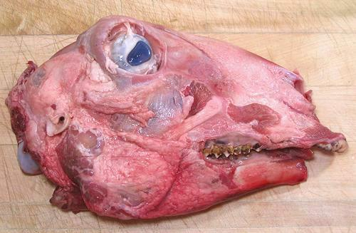
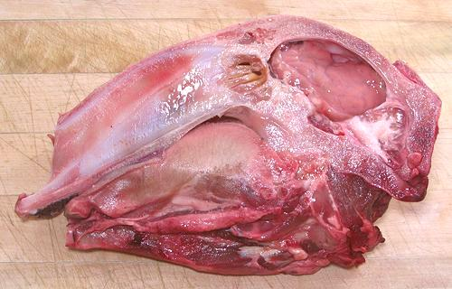

|


More on Lamb / Mutton Cuts. |
Lamb heads are a prized delicacy in the cuisines of North Africa, the Middle East, Turkey, Armenia and the Stans. American military officers in Iraq, who've asked for a "real authentic Iraqi dinner" have regretted their request as dinner stared back at them at the table - while the Iraqis beam with pride at the fine fare they have provided. Lamb head is also quite popular in Norway and Iceland. Buying:Because of our large and very diverse ethnic populations here in Southern California, the big multi-ethnic markets often have Lamb Head, plastic wrapped on foam trays. Here it is always half heads, the whole head for properly staring at the guests needs to be ordered special. It will still be cut in half, but able to be bound together. The photo specimen was 10 inches long and 6 inches wide, weighing 1 pound 10-3/4 ounces. It was purchased from a large multi-ethnic market in Los Angeles (Altadena) for 2019 US $2.29 / pound.Prep:In primitive circumstances, the head may be charred over a charcoal fire to burn off hair and make it possible to rub off the skin. Note that in some regions, such as Norway, the hair is singed off but the skin is left on. Around here, the heads are sold skinned and ready to go. In all cases, the head is sawed in half lengthwise, though it may be tied back together for or after roasting. Here in Southern California we will usually be dealing with half heads that don't match.Cooking:There are a number of ways in which Lamb Head is cooked. The brain is always removed and cooked separately.
|